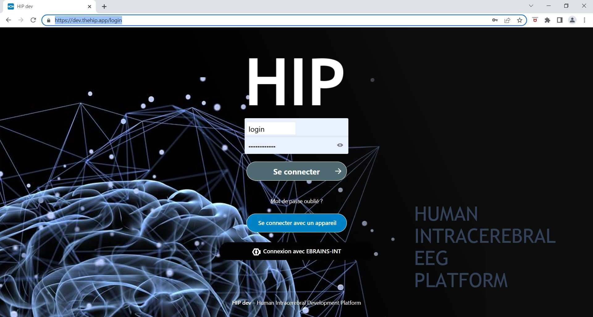
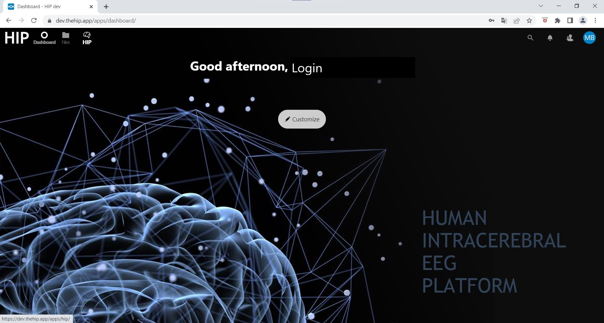
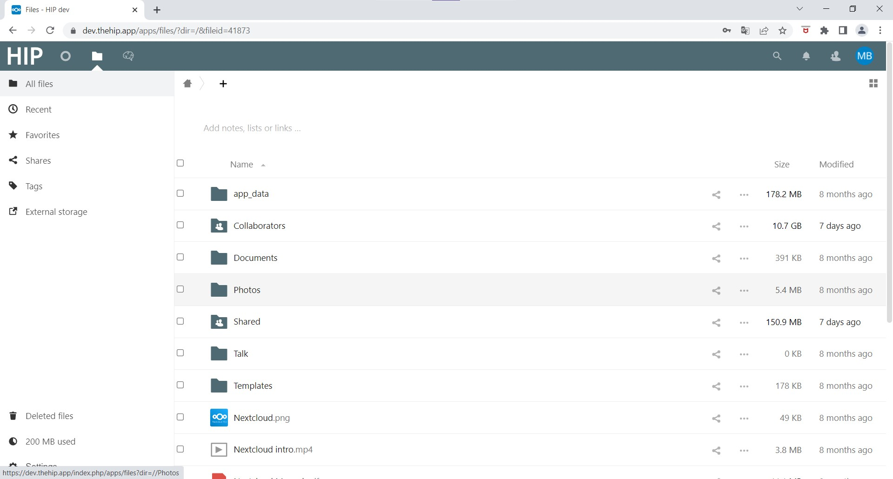
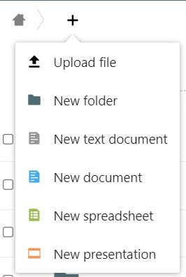
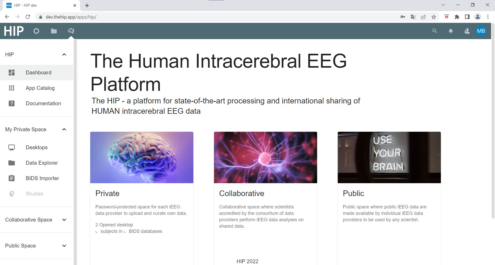
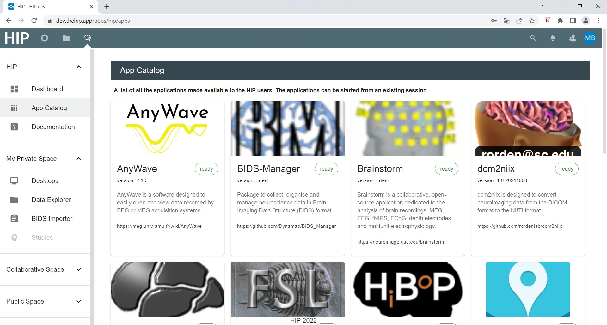
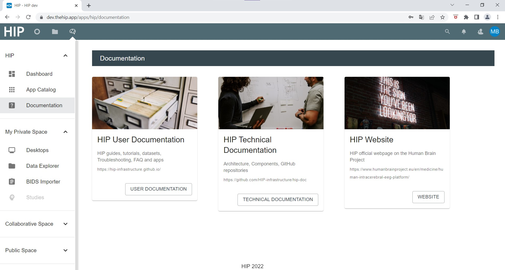
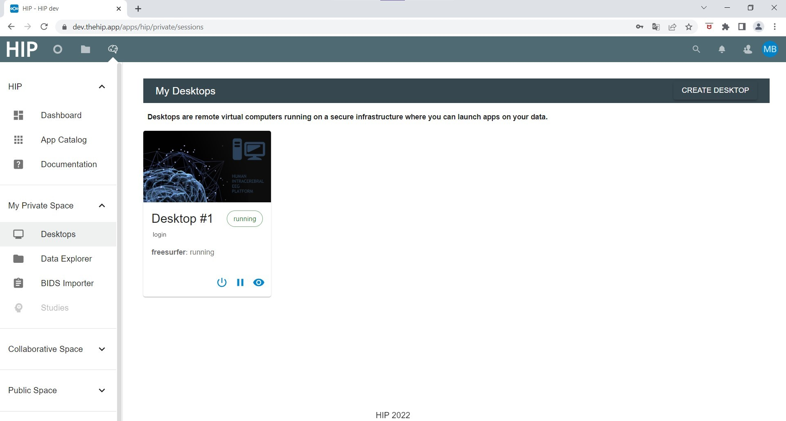
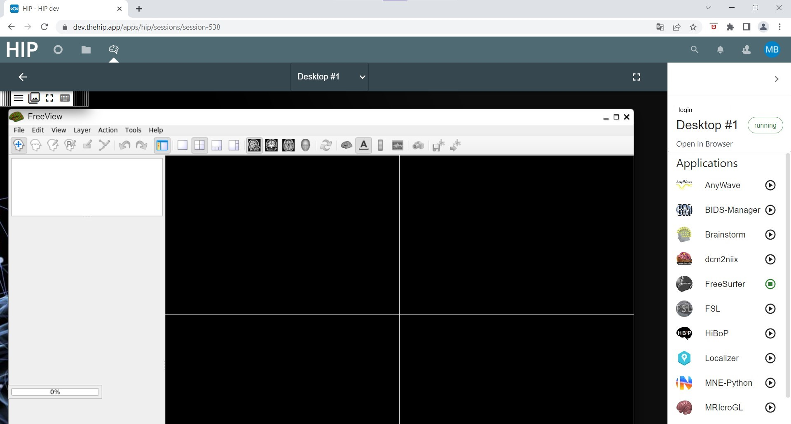

New users onboarding
Connecting to the HIP
In your browser, go to the HIP website and enter your login and password.
The HIP Dashboard
After connecting the Dashboard is displayed. On the top left, three icons allow you to go to the dashboard, your files and directories, and the HIP applications. On the top right you can find your user settings.
Files and directories
Click on Files on the top left of the dashboard. Here is a detailed guide to uploading data to the HIP.
You now have access to the files and directories of you private space as well as shared files.
From this interface, you can upload a few files using the ‘+’ menu.
HIP interface
From the Dashboard, click on the HIP icon on the top left of the page.

The main HIP interface is displayed.
On the left menu, there are links to go back to the dashboard, to an app catalago, to documentation.

The app catalog lists applications available for use on the HIP.

The documentation links to this user documentation, technical documentation and so on
My Private Space sub-menu
Data explorer and BIDS importer allow to create and explore BIDS databases on your private space. Desktops are virtual machines in which HIP apps can be run.
Shared and Public spaces will be used for collaborations. Functionality is in development.
HIP Virtual Desktops
In the Private area, Desktops gives you access to virtual machines to run apps.
You can click on “Create desktop” to create a new virtual desktop. For running desktops, you can close them or open them in your browser (eye icon).
Once running a virtual desktop, you can run HIP apps in them using the right-side menu of the virtual desktop. Here is an example running Freesurfer app.
For more information regarding HIP Virtual Desktops please refer to the following HIP GUIDE: